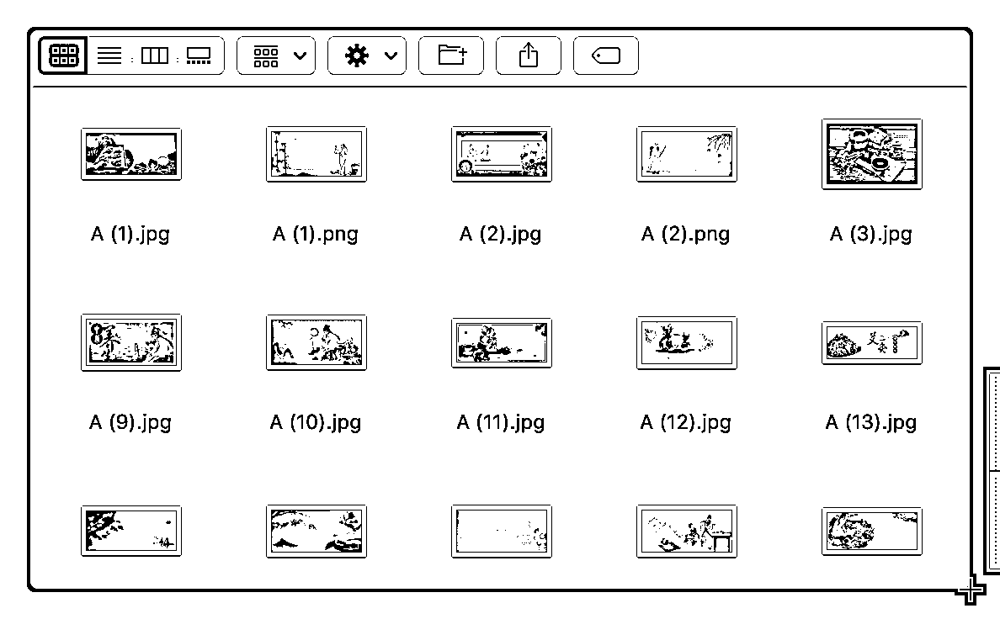
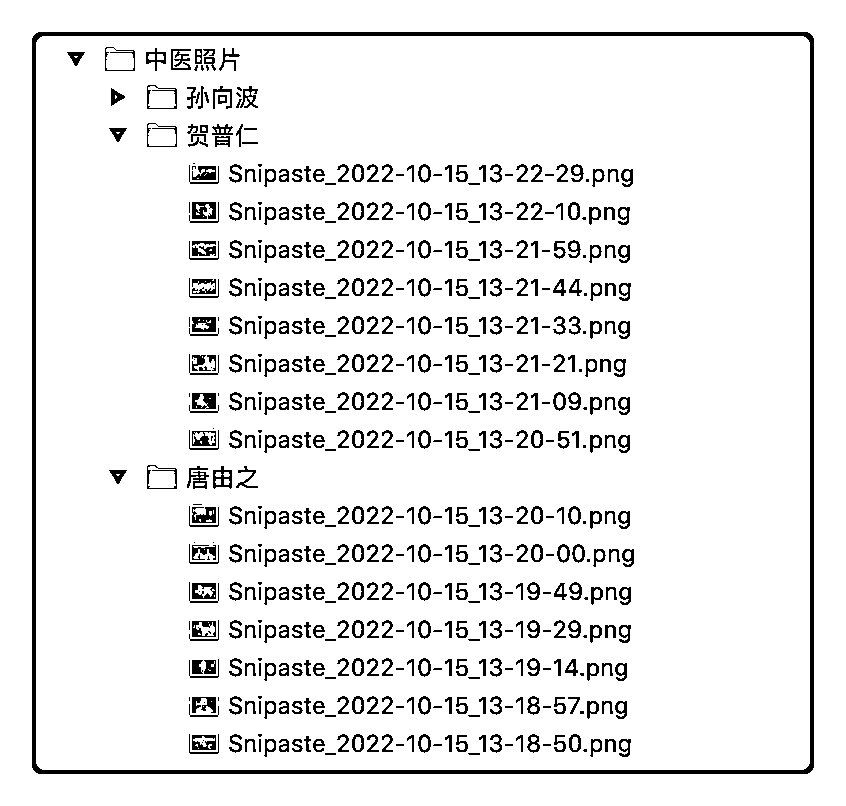
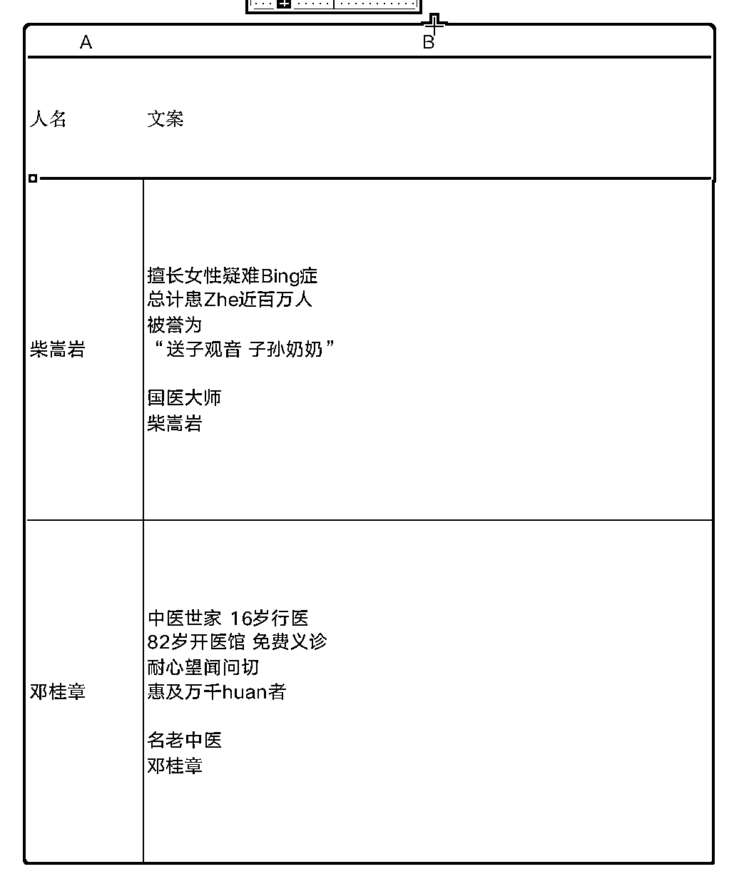
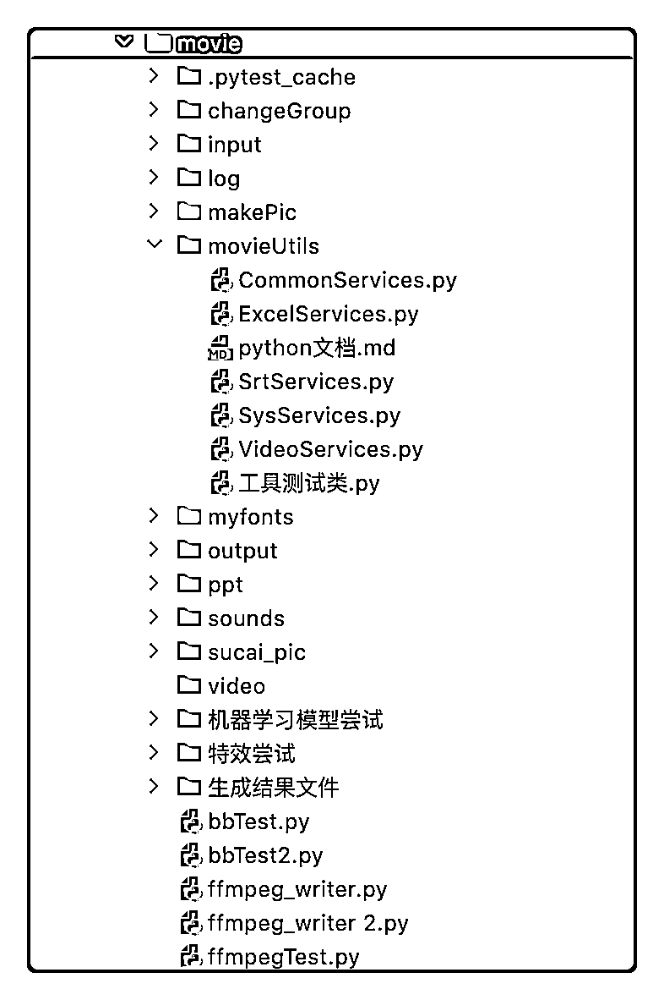
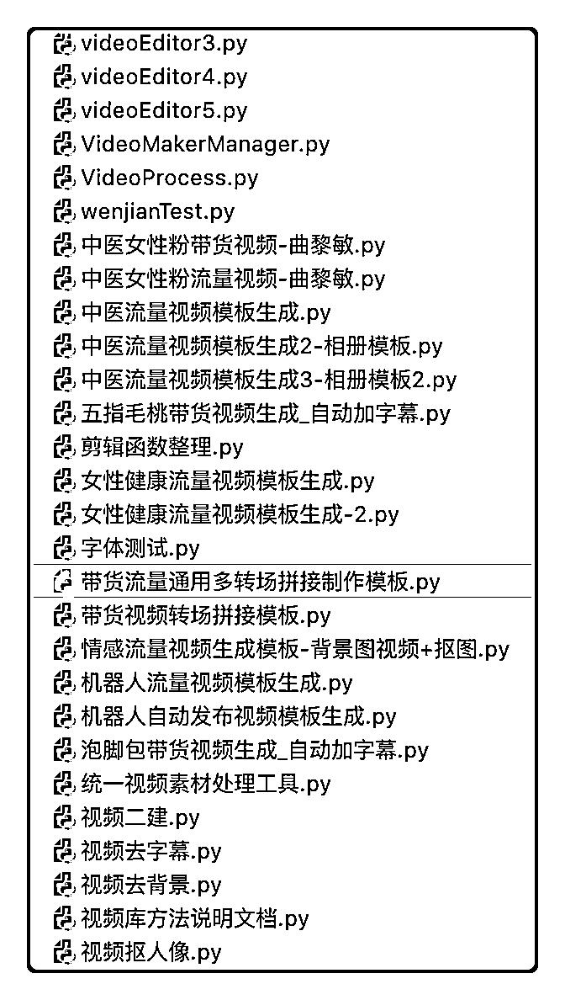

来源：https://f2rgk22rcn.feishu.cn/docx/JmBgdr705ovHoyxQknRctRaMnKh
这篇文章分享一个有意思的项目。
先看下这个视频号里发布的这些短视频：微信视频号搜“视频电商研究社”（仅做展示用，不是实操号。下方列举了其中的两个视频）
如果说这个视频号中的视频都是自动生成出来的原创视频内容，而且是自动发布上去的，你有什么想法？
这个是我去年下半年开始做的一个项目，当时中医养生号短视频带货还比较火，有一个朋友正巧在做，做了三个号几个月变现了10w左右，他给我详细说了一下中医养生赛道从起号到变现的过程，我当时就冒出一个想法，这事可以标准化规模化来搞。我来做技术实现，包括内容的自动生产和发布，他来负责内容，包括内容把控和选品，做矩阵，放大这个带货能力，分工产生效率，于是就有了这个项目。
首先每个赛道短视频带货都是有方法的，我做过中医养生号、教辅号，从起号到变现，这个流程可以标准化。
然后就是内容这块，内容创作上，原创优于二剪优于搬运，所以直接1比1模仿当下的爆款视频去做原创。每个赛道的视频内容也都有两种：流量视频和带货视频。流量视频是拉曝光涨粉打标签用的，针对要做的客户人群画像，找到对标账号，找出当下流行的爆过的那些流量视频（下方是中医养生号的流量视频模板，这是我们最早使用的流量视频模板，比较简单）。带货视频也是一样的路子。用这样验证过的流量视频或者带货视频当模板，是要保证1比1模仿做出的内容都是60分以上的。
找到流量视频模板和带货视频模板后，剩下的就是内容的自动化生产和发布了，还是以上方这个中医养生号的流量视频模板举例，下面是详细的实现过程：
所有的视频都可以拆成以下元素：
举例，第一个流量视频模板可以拆解为：
背景：一张中医大师的照片，放大模糊
标题：请等一下，xxxx
内容：一张中医大师的照片
文案：国医大师xxx
字幕：无
背景音乐：
找这个视频模板拆解后的每个元素相似的素材，比如背景图，内容素材、背景音乐等。
举个例子，第一个流量视频模板的背景和内容素材是一张中医大师的照片，第二个的背景是中医相关的视频，内容素材就是中医大师的照片，去找相关的素材就可以了。



每个元素的素材准备好以后，就可以写这个视频模板的自动生成视频代码了。写的模板多了就会发现很多方法都可以共用，把他们抽出来做成底层的工具模块，以后再有新的视频模板，拼一下就出来了，很简单。现在几分钟就能实现一个新的模板，抖音上看到的视频只要不是特效很多，基本都能做，只要拆解清楚就可以。
每个视频的生成时都加一些混淆元素，用自己拍的照片和视频；还有要注意自动生产出来的视频的差异性，保证每一个生成的视频都是不同的，这里有几个方法：
1、每个素材随机取用
2、如果模版视频有多个片段，那么每个片段素材内的时间段也随机取用
再加上混淆元素，这样能保证做出来的视频都是原创视频，且每个视频生成的都不相同，在任何一个平台都能过原创。


有了内容自动生成能力之后，每天能生产很多的视频，视频内容自由了。视频生产出来之后，可以往多个平台发布，一鱼多吃，所以就开发了自动发布工具，每天往多平台多账号自动发布视频，基本不需要人工干预。平台主要是抖音和视频号。
视频模板有各种各样的形式，拆解的多了会发现其实都是上面提到的那些元素组成的，比如相对复杂一些的：
这三个有带货视频也有流量视频，但是模板拆解以后，实现起来都差不多。
现在内容自动化生产和发布已经比较稳定了，需要花费的精力主要就是选品和更新视频模板，这个需要选品能力和内容把控能力，选品和找素材的方法也可以标准化，其他需要关注的还有视频数据监控和账号风控。
再有多余的精力也会看一下其他赛道，这个复制到其他赛道也是一样的方法，所以是可以规模化搞起来的。
内容的自动化生产，从纯文字为信息载体的时代就已经有了，比如一些文章生成器，软文自动生成工具等等，到后来的图文，到现在的视频，都可以用这个思路去做。除了做短视频带货，这个能力还可以用来做产品推广、服务推广、品牌推广，做内容引流，做SEO等等，还有其他一些领域也可能用的上。
现在想用免费流量做短视频带货不像之前那么容易了，通过矩阵的方式靠量获取更多的免费流量，这样才能增加爆单的概率，所以“如何解决原创视频内容的批量生产”就是一个关键问题了，相比手动剪辑视频，自动化生产是个很好的解决方案。短视频带货在今年我相信还是一个很不错的项目，也会投入更多资源做这个事情。
以上就是这次分享的全部内容，过年难得有时间整理一下，感觉有帮助的话别忘记给帖子点点赞呀，也欢迎朋友们来交流，我的微：tata666uu（备注下在哪看到这篇文章的），期待更多的玩法。
【昵称】：塔塔 【城市】：烟台，北京 【个人简介】：前互联网行业架构师，8年一线互联网公司研发经历，擅长用技术驱动流量，开发了多个流量工具产品。目前在做短视频图文带货矩阵、流量工具产品、私域电商这几个项目。V：tata666uu 【提供资源】： 1)流量工具：微信自动加好友机器人（主动加人）、原创视频或图文自动生成系统（内容引流） 2)全平台视频图文自动化批量发布机器人 3)开发技术支持，精通RPA、python、java等技术 4)同城门店老板私域2w+，包括餐饮、剧本杀、健身房、美容、教培、亲子、宠物等各个业态。 5)山东烟台特产水果海鲜货源：苹果、大樱桃、海鲜等各种等级产品及深加工产品 【需求资源】： 1、短视频或图文引流带货项目合作：可自动生成视频或图文内容，有跑通的项目可以来合作放大。 2、私域运营高手。 【精华贴】 《用RPA机器人，30天时间加到2000个同城线下门店老板的微信》 https://f2rgk22rcn.feishu.cn/docs/doccnbX6yzxwhWjGBi6DOV59cqd 《如何解决原创视频内容的批量生产？聊聊我的短视频带货矩阵的自动化之路》 https://f2rgk22rcn.feishu.cn/docx/JmBgdr705ovHoyxQknRctRaMnKh